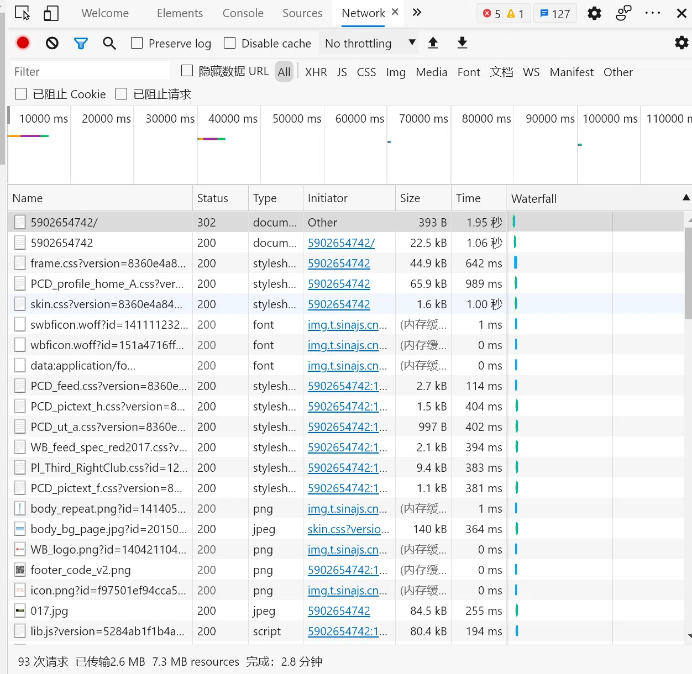
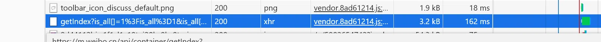
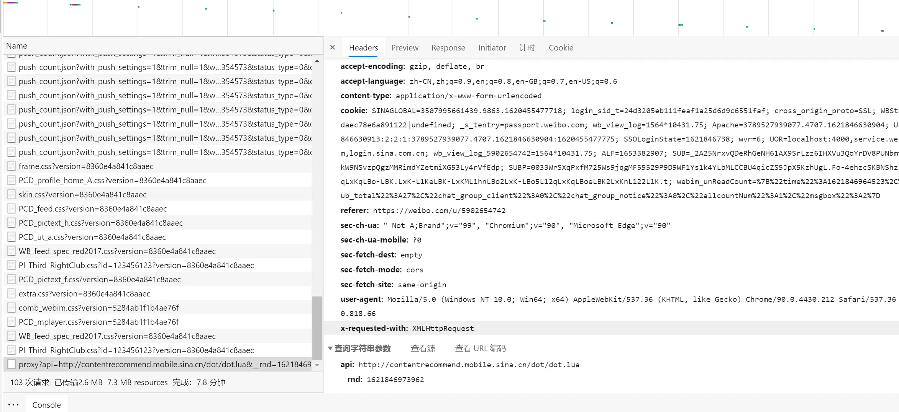
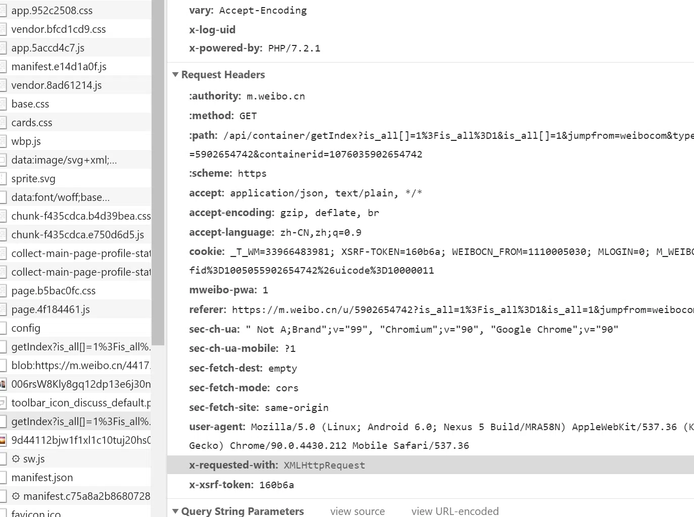
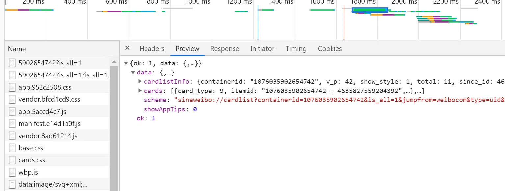
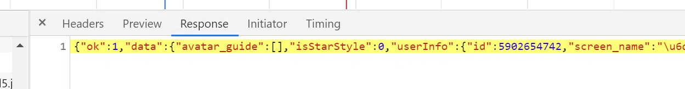
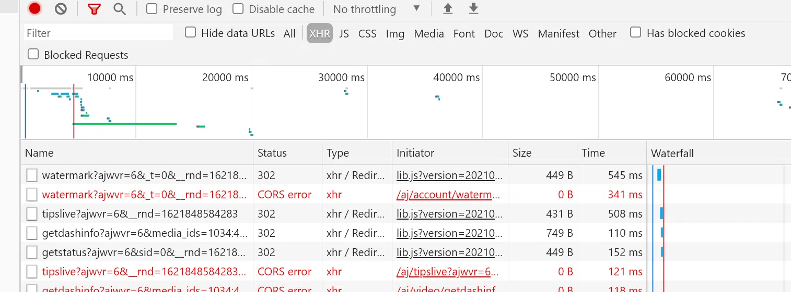
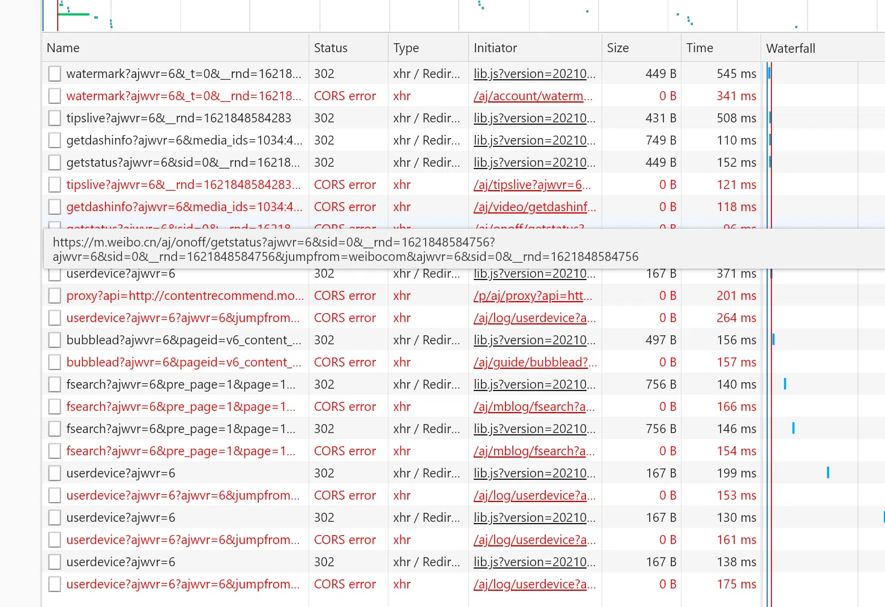

Ajax的原理和解析
什么是Ajax？
Ajax，全称为Asynchronous JavaScriptand XML，即异步的JavaScript和XML。它不是一门编程语言，而是利用JavaScript在保证页面不被刷新、页面链接不改变的情况下与服务器交换数据并更新部分网页的技术。
传统的网页，如果你想更新其内容，那么必须要刷新整个页面。有了Ajax，便可以在页面不被全部刷新的情况下更新其内容。在这个过程中，页面实际上在后台与服务器进行了数据交互，获取到数据之后，再 利用JavaScript改变网页，这样网页内容就会更新了。
到W3School上体验几个Demo来感受一下：http://www.w3school.com.cn/ajax/ajax_xmlhttprequest_send.asp。
基本原理
初步了解了Ajax之后，来详细了解它的基本原理。发送Ajax请求到网页更新的过程可以简单分为以下3步：
- 发送请求
- 解析内容
- 渲染网页
发送请求
JavaScript可以实现页面的各种交互功能，Ajax也不例外，它是由JavaScript实现的，实际上执行了如下代码：
1 | |
这是JavaScript对Ajax最底层的实现，这个过程实际上是新建了XMLHttpRequest对象，然后调用onreadystatechange属性设置监听，最后调用open()和send()方法向某个链接（也就是服务器）发送请求。
用Python实现请求发送之后，可以得到响应结果，但这里请求的发送由JavaScript来完成。由于设置了监听，所以当服务器返回响应时，onreadystatechange对应的方法便会被触发，在这个方法里面 解析响应内容即可。
解析内容
解得到响应之后，onreadystatechange属性对应的方法会被触发，此时利用xmlhttp的responseText属性便可取到响应内容。这类似于Python中利用requests向服务器发起请求，然后得到响应的过程。
返回的内容可能是HTML，也可能是JSON，接下来只需要在方法中用JavaScript进一步处理即可。比如，如果返回的内容是JSON的话，可以对它进行解析和转化。
渲染网页
JavaScript有改变网页内容的能力，解析完响应内容之后，就可以调用JavaScript针对解析完的内容对网页进行下一步处理。比如，通过document.getElementById().innerHTML这样的操作，对某个元素内的源代码进行更改，这样网页显示的内容就改变了，这种对Document网页文档进行如更改、删除等操作也被称作**DOM操作**。
上例中，document.getElementById("myDiv").innerHTML=xmlhttp.responseText这个操作便将ID为myDiv的节点内部的HTML代码更改为服务器返回的内容，这样myDiv元素内部便会呈现出服务器返回的新数据，网页的部分内容看上去就更新了。
可以看到，发送请求、解析内容和渲染网页这3个步骤其实都是由JavaScript完成的。
Ajax分析
用浏览器打开微博链接https://weibo.com/u/5902654742，随后在页面中点击鼠标右键，从弹出的快捷菜单中选择“检查”选项，此时便会弹出开发者工具，如图所示：

1 | |
Ajax有其特殊的请求类型，它叫作xhr。在图中我们可以发现一个以getIndex开头的请求，其Type为xhr，这就是一个Ajax请求。用鼠标点击这个请求，可以查看这个请求的详细信息。

在右侧可以观察到Request Headers、URL和Response Headers等信息。Request Headers中有一个信息为X-Requested-With:XMLHttpRequest，这就标记了此请求是Ajax请求，如图所示：


点击Preview，即可看到响应的内容，它是JSON格式的。这里Chrome为我们自动做了解析，点击箭头即可展开和收起相应内容。
可以观察到，返回结果是我的个人信息，包括昵称、简介、头像等，这也是用来渲染个人主页所使用的数据。JavaScript接收到这些数据之后，再执行相应的渲染方法，整个页面就渲染出来了。

切换到Response选项卡，从中观察到真实的返回数据，如图所示：

所以说，我们看到的微博页面的真实数据并不是最原始的页面返回的，而是在执行 JavaScript 后再次向后台发送 Ajax请求，浏览器拿到数据后进一步渲染出来的。
过滤请求
利用Chrome开发者工具的筛选功能筛选出所有的Ajax请求。在请求的上方有一层筛选栏，直接点击XHR，此时在下方显示的所有请求便都是Ajax请求了，如图所示：

接下来，不断滑动页面，可以看到页面底部有一条条新的微博被刷出，而开发者工具下方也不断地出现Ajax请求，这样我们就可以捕获到所有的Ajax请求了。 随意点开一个条目，都可以清楚地看到其Request URL、Request Headers、Response Headers、Response Body等内容，此时想要模拟请求和提取就非常简单了。

本博客所有文章除特别声明外，均采用 CC BY-SA 4.0 协议 ，转载请注明出处！